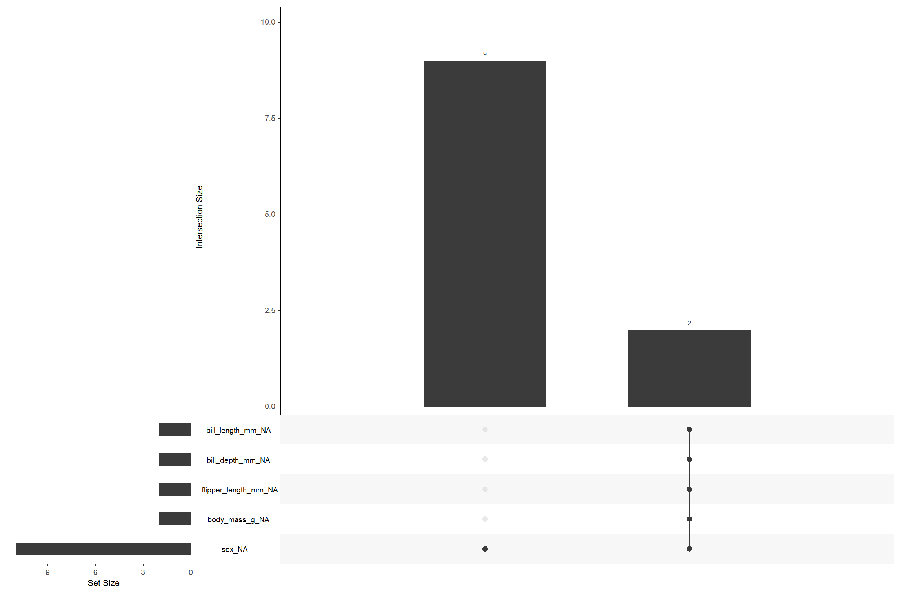

Topics Covered
dplyr Verbs & Pipes
Master filter, select, mutate, rename, summarise, and arrange — chain them with the pipe operators %>% and |>.
Grouping & Counting
Aggregate data with group_by() + summarise(), and quickly tally categories with count() and tally().
Reshaping Data
Transform between wide and long formats using pivot_longer() and pivot_wider().
Missing Data
Detect, visualise, and handle NAs using naniar (gg_miss_var, gg_miss_upset) and visdat (vis_miss).
Key Concepts
- Filtering rows with logical conditions:
==,|,%in%, and range checks - Selecting and dropping columns — including helpers like starts_with(), ends_with(), contains()
- Creating new columns with mutate() — ratios, unit conversions, and conditional labels via if_else()
- Group-wise summaries: mean, max, sd with group_by() + summarise()
- Reshaping: wide → long with pivot_longer(), long → wide with pivot_wider()
- Diagnosing missingness: vis_miss() for bird's eye view, gg_miss_var() for bar charts, gg_miss_upset() for co-occurrence patterns
- Cleaning data with drop_na() after understanding the missingness structure
Scripts
📄 missing_data_viz.R
Missing data analysis with naniar & visdat — vis_miss() heatmap, gg_miss_var() bar chart, and gg_miss_upset() co-occurrence plot.
📄 dplyr_verbs.R
Core dplyr verbs on Palmer Penguins — filter, select, rename, mutate, group_by + summarise, count/tally, and pivot_longer/pivot_wider.
📄 data_wrangling_exercises.R
Hands-on exercises with chaining, OR logic, %in%, helper selectors, and multi-column mutate — includes 🧪 Try-It challenges.
Visual

Missing data visualisation generated by missing_data_viz.R
Homework
- Filter penguins whose flipper length is between 190 and 210 mm (🧪 from day2_data_wrangling.R)
- Select only columns that end with "_mm" using helper functions
- Create a column called bill_area = bill_length_mm × bill_depth_mm
- Run vis_miss() and gg_miss_upset() on the penguins dataset and interpret the patterns
- Use drop_na() and compare the cleaned dataset dimensions to the original
Resources
Homework Downloads
📄 data_manip_intro_tidyverse.R
Introduction to tidy data manipulation — pipes, filter, select, mutate, and core dplyr workflows.
📄 data_manip_efficient_tidyverse.R
Efficient tidyverse patterns — across(), where(), rowwise operations, and performance-conscious wrangling.
📄 data_manip_advanced_tidyverse.R
Advanced tidyverse techniques — joins, nested data, purrr mappings, and complex reshaping pipelines.